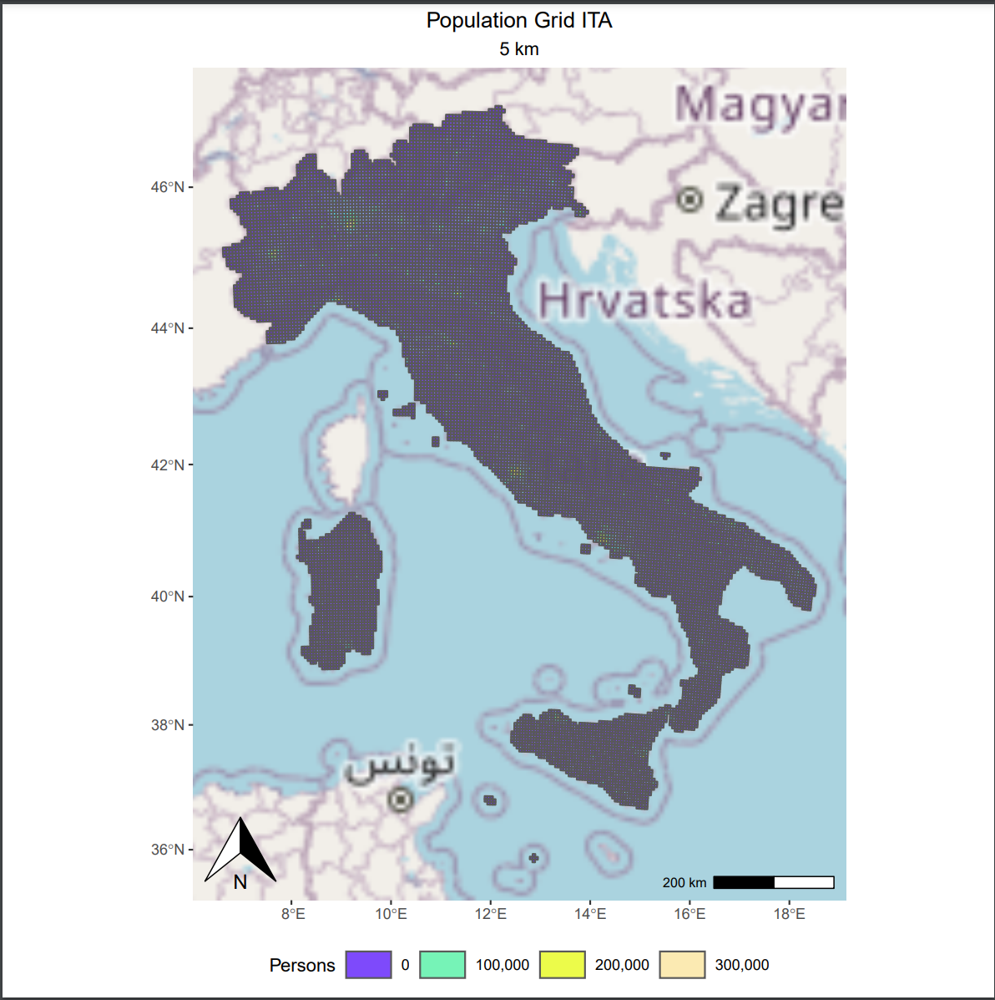

The package europopgridviewer is a simple shiny application build with the help of the golem package which allows you to load Eurostat population grids into an R mapdeck based map viewer. It currently only allows to download the 10km and 5km grid, mainly due to processing requirements of more granular resolutions. To fetch the data, it uses the giscoR package.
Installation
Install R: https://cran.r-project.org/mirrors.html (version 4.1.1 or greater)
Install R Studio: https://rstudio.com/products/rstudio/download/ (version 1.2.5001-3 or newer)
Make sure the devtools package is installed, if not install it with:
install.packages("devtools")- After that install the actual package:
devtools::install_github("michael-cw/europopgridviewer")Start the application
Start R Studio and run the following commands:
library(europopgridviewer)
europopgridviewer::run_app(mapboxkey = [Your key goes her])This will load the default map for all the members of the European Statistical System.

After having selected a country as well as the desired grid layer (5km or 10km) with the two drop down inputs in the sidebar, the application will load the grid onto the map.

In case you want to use the map in an external file, like i.e. a presentation or a report, you can also download the map by clicking Download PDF.

When using the map externally make sure, that you also use the giscoR package attribution, which is shown on the Info tab.
Help for run time parameters
To learn about the individual run time parameters, please run the following commands:
?europopgridviewer::run_appThis will give you all the information required. The most important one is the mapbox key for the base map. In case you are not using a mapbox key, the application will still work, however it will only display the layer without any background map.